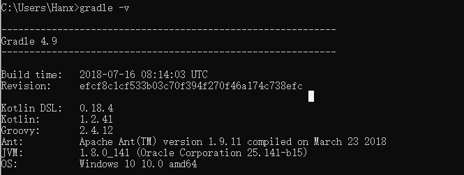
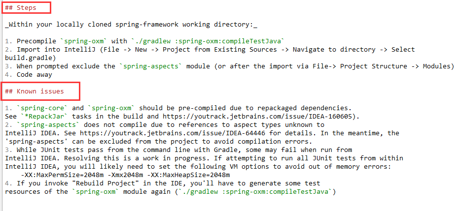
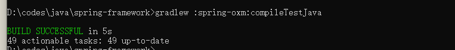
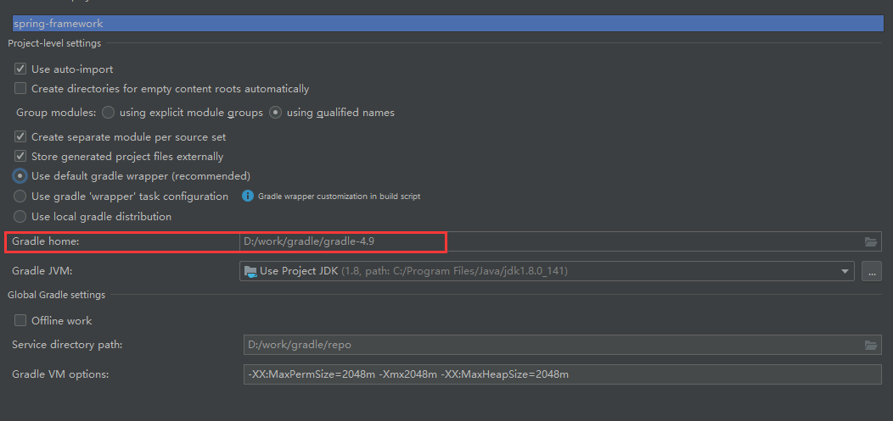
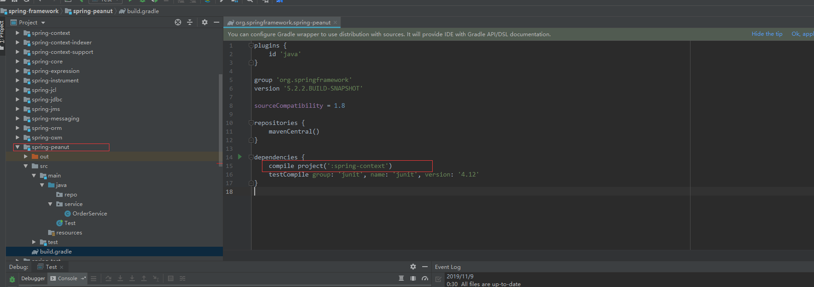

1. jdk1.8.1
做java开发的这个应该能自己找到
2.gradle-4.9 https://services.gradle.org/distributions/
没用过gradle的同学可以将其理解为类似于maven的包管理工具，这里下载gradle-4.9-bin.zip，解压到本地，配置环境变量(GRADLE_HOME=D:/dev/gradle[文件解压路径].，PATH变量新增”%GRADLE_HOME%/bin;“)
打开命令行执行一下gradle -v出现如下提示即成功

3.spring-framework源码包 https://github.com/spring-projects/spring-framework/tree/5.0.x
注意：这里对版本不做解释，只是我目前正在使用的可兼容的版本，spring-framework的源码包有需要最新的可自行切换分支即可。
对于下载或者clone源码比较慢的同学，这里可以通过码云做一下过渡，具体操作如下：
新建仓库-->导入已有仓库-->将github提供的clone地址拷贝过来，导入即可(这里一定要选择https，用ssh的地址是克隆不了的)-->大概2，3分钟即可克隆完成，再从码云下载就会快很多了。
1.如果是clone的方式，先切到对应分支上；
2.如果是下载zip包的方式，先将压缩包解压到对应的代码目录即可。
发现根目录下有两个文件，如下：
本次使用的编译器是idea，那我们就只看import-into-idea.md文件

根据md文档中给出的步骤
1.预编译spring-oxm通过命令./gradlew :spring-oxm:compileTestJava(注意：给出的命令是Linux环境下的，Windows在执行代码根目录下执行gradlew :spring-oxm:compileTestJava)

我这里由于已经下载好了一次，这里保留一张执行成功的状态。
2.导入idea，可以直接import project->选择源码路径->选择gradle点击next->勾选Use auto-import，且配置一下gradle的安装目录，点击next即可

可以看到上图中最下面一行配置了Gradle VM options，这里也是根据官方提供的md文档中knows issues中所描述的，概括一下就是:如果想通过idea去运行测试案例的话，可以通过配置参数避免内存不足的情况。
接着等待gradle在中心仓库下载jar包，这里给网速比较慢的同学提供一个提速的方法，都知道maven从中心仓库下载jar包的时候速度是比较慢的，gradle也一样，所以建议使用阿里云的仓库去下载，只需要修改build.gradle文件中的下载地址如下：
repositories {
maven{ url 'http://maven.aliyun.com/nexus/content/groups/public/'}
}
等待下载完成。
最后新建一个自己的module如下[我这里新建了一个spring-peanut]，把需要调试的项目包在build.gradle中的dependencies下引入即可。注意：新建module的时候是选gradle而非maven

最后就可以写一个自己的测试入口类去debug源码了。